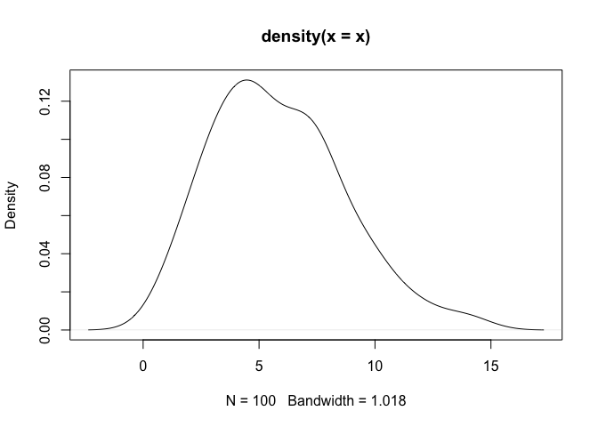
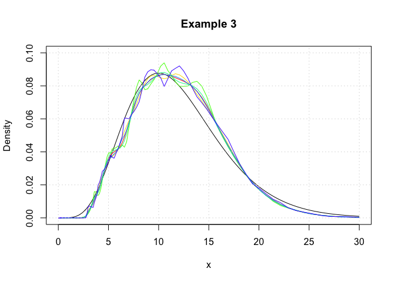

The goal of logKDE is to provide a set of functions for kernel density estimation on the positive domain, using log-kernel density functions, for the R programming environment. The main functions of the package are the logdensity and logdensity_fft functions. The choice of functional syntax was made to resemble those of the density function, for conducting kernel density estimation on the real domain. The logdensity function conducts density estimation, via first principle computations, whereas logdensity_fft utilizes fast-Fourier transformation in order to speed up computation. The use of Rcpp guarantees that both methods are sufficiently fast for large data scenarios.
Currently, a variety of kernel functions and plugin bandwidth methods are available. By default both logdensity and logdensity_fft are set to use log-normal kernel functions (kernel = 'gaussian') and Silverman’s rule-of-thumb bandwidth, applied to log-transformed data (bw = 'nrd0'). However, the following kernels are also available:
- log-Epanechnikov (
kernel = 'epanechnikov'), - log-Laplace (
kernel = 'laplace'), - log-logistic (
kernel = 'logistic'), - log-triangular (
kernel = 'triangular'), - log-uniform (
kernel = 'uniform').
The following plugin bandwidth methods are also available:
- all of the methods that available for density, applied to log-transformed data (see
?bw.nrdregarding the options), - unbiased cross-validated bandwidths in the positive domain (
bw = 'logcv'), - a Silverman-type rule-of-thumb that optimizes the kernel density estimator fit, compared to a log-normal density function (
bw = 'logg').
The logdensity and logdensity_fft functions also behave in the same way as density, when called within the plot function. The usual assortment of commands that apply to plot output objects can also be called.
For a comprehensive review of the literature on positive-domain kernel density estimation, thorough descriptions of the mathematics relating to the methods that have been described, simulation results, and example applications of the logKDE package, please consult the package vignette. The vignette is available via the command vignette('logKDE'), once the package is installed.
Installation
If devtools has already been installed, then the most current build of logKDE can be obtained via the command:
devtools::install_github('andrewthomasjones/logKDE',build_vignettes = T)The latest stable build of logKDE can be obtain from CRAN via the command:
install.packages("logKDE", repos='http://cran.us.r-project.org')An archival build of logKDE is available at https://zenodo.org/record/1317784. Manual installation instructions can be found within the R installation and administration manual https://cran.r-project.org/doc/manuals/r-release/R-admin.html.
Examples
Example 1
In this example, we demonstrate that logdensity has nearly identical syntax to density. We also show that the format of the outputs are also nearly identical.
## Load 'logKDE' library.
library(logKDE)
## Set a random seed.
set.seed(1)
## Generate strictly positive data.
## Data are generated from a chi-squared distribution with 12 degrees of freedom.
x <- rchisq(100,6)
## Construct and print the output of the function 'density'.
density(x)
#>
#> Call:
#> density.default(x = x)
#>
#> Data: x (100 obs.); Bandwidth 'bw' = 1.018
#>
#> x y
#> Min. :-2.366 Min. :4.707e-05
#> 1st Qu.: 2.547 1st Qu.:7.209e-03
#> Median : 7.459 Median :3.315e-02
#> Mean : 7.459 Mean :5.079e-02
#> 3rd Qu.:12.372 3rd Qu.:1.012e-01
#> Max. :17.284 Max. :1.311e-01
## Construct and print the output of the function 'logdensity'.
logdensity(x)
#>
#> Call:
#> logdensity(x = x)
#>
#> Data: x (100 obs.); Bandwidth 'bw' = 0.1923
#>
#> x y
#> Min. : 0.1111 Min. :0.00000
#> 1st Qu.: 3.7851 1st Qu.:0.02313
#> Median : 7.4592 Median :0.06527
#> Mean : 7.4592 Mean :0.06707
#> 3rd Qu.:11.1333 3rd Qu.:0.11219
#> Max. :14.8073 Max. :0.13698
## Plot the 'density' output object.
plot(density(x))
## Plot the 'logdensity' output object.
plot(logdensity(x))
As a note, one can observe that density assigns positive probability to negative values. Since we know that the chi-squared generative model generates only positive values, this is an undesirable result. The log-transformed kernel density estimator that is produced by logdensity only assigns positive probability to positive values, and is thus bona fide in this estimation scenario.
Example 2
In this example, we showcase the variety of kernel functions that are available in the package. Here, log-transformed kernel density estimators are constructed using the logdensity function.
## Load 'logKDE' library.
library(logKDE)
## Set a random seed.
set.seed(1)
## Generate strictly positive data.
## Data are generated from a chi-squared distribution with 12 degrees of freedom.
x <- rchisq(100,12)
## Construct a log-KDE using the data, and using each of the available kernel functions.
logKDE1 <- logdensity(x,kernel = 'gaussian',from = 1e-6,to = 30)
logKDE2 <- logdensity(x,kernel = 'epanechnikov',from = 1e-6,to = 30)
logKDE3 <- logdensity(x,kernel = 'laplace',from = 1e-6,to = 30)
logKDE4 <- logdensity(x,kernel = 'logistic',from = 1e-6,to = 30)
logKDE5 <- logdensity(x,kernel = 'triangular',from = 1e-6,to = 30)
logKDE6 <- logdensity(x,kernel = 'uniform',from = 1e-6,to = 30)
## Plot the true probability density function of the generative model.
plot(c(0,30),c(0,0.1),type='n',xlab='x',ylab='Density',main='Example 2')
curve(dchisq(x,12),from = 0,to = 30,add = T)
## Plot each of the log-KDE functions, each in a different rainbow() colour.
lines(logKDE1$x,logKDE1$y,col = rainbow(7)[1])
lines(logKDE2$x,logKDE2$y,col = rainbow(7)[2])
lines(logKDE3$x,logKDE3$y,col = rainbow(7)[3])
lines(logKDE4$x,logKDE4$y,col = rainbow(7)[4])
lines(logKDE5$x,logKDE5$y,col = rainbow(7)[5])
lines(logKDE6$x,logKDE6$y,col = rainbow(7)[6])
## Add a grid for a visual guide.
grid()
Example 3
In this example, we show that logdensity and logdensity_ftt yield nearly identical results. Here, log-transformed kernel density estimators are constructed using the logdensity_ftt function.
## Load 'logKDE' library.
library(logKDE)
## Set a random seed.
set.seed(1)
## Generate strictly positive data.
## Data are generated from a chi-squared distribution with 12 degrees of freedom.
x <- rchisq(100,12)
## Construct a log-KDE using the data, and using each of the available kernel functions.
logKDE1 <- logdensity_fft(x,kernel = 'gaussian',from = 1e-6,to = 30)
logKDE2 <- logdensity_fft(x,kernel = 'epanechnikov',from = 1e-6,to = 30)
logKDE3 <- logdensity_fft(x,kernel = 'laplace',from = 1e-6,to = 30)
logKDE4 <- logdensity_fft(x,kernel = 'logistic',from = 1e-6,to = 30)
logKDE5 <- logdensity_fft(x,kernel = 'triangular',from = 1e-6,to = 30)
logKDE6 <- logdensity_fft(x,kernel = 'uniform',from = 1e-6,to = 30)
## Plot the true probability density function of the generative model.
plot(c(0,30),c(0,0.1),type='n',xlab='x',ylab='Density',main='Example 3')
curve(dchisq(x,12),from = 0,to = 30,add = T)
## Plot each of the log-KDE functions, each in a different rainbow() colour.
lines(logKDE1$x,logKDE1$y,col = rainbow(7)[1])
lines(logKDE2$x,logKDE2$y,col = rainbow(7)[2])
lines(logKDE3$x,logKDE3$y,col = rainbow(7)[3])
lines(logKDE4$x,logKDE4$y,col = rainbow(7)[4])
lines(logKDE5$x,logKDE5$y,col = rainbow(7)[5])
lines(logKDE6$x,logKDE6$y,col = rainbow(7)[6])
## Add a grid for a visual guide.
grid()
We observe that the logdensity_fft outputs are noticiably smoother than those of logdensity. This is because fast Fourier transformations (FFT) only yield kernel density estimates at discrete points, and the regions between these discrete points are approximated via a linear approximator, namely using the approx function. This is the same evaluation technique as that which is used in the function density. Additionally the FFT approximation points are evenly space on the real line, whereas those used for logdensity are evenly spaced on a log scale.
Example 4
In this example, we showcase the variety of plugin bandwidth estimators that are available in the package. Here, log-transformed kernel density estimators are constructed using the logdensity function.
## Load 'logKDE' library.
library(logKDE)
## Set a random seed.
set.seed(1)
## Generate strictly positive data.
## Data are generated from a chi-squared distribution with 12 degrees of freedom.
x <- rchisq(100,12)
## Construct a log-KDE using the data, and using each of the available kernel functions.
logKDE1 <- logdensity(x,bw = 'nrd0',from = 1e-6,to = 30)
logKDE2 <- logdensity(x,bw = 'logcv',from = 1e-6,to = 30)
logKDE3 <- logdensity(x,bw = 'logg',from = 1e-6,to = 30)
logKDE4 <- logdensity(x,bw = 'nrd',from = 1e-6,to = 30)
logKDE5 <- logdensity(x,bw = 'ucv',from = 1e-6,to = 30)
#> Warning in stats::bw.ucv(log(x)): minimum occurred at one end of the range
logKDE6 <- logdensity(x,bw = 'bcv',from = 1e-6,to = 30)
#> Warning in stats::bw.bcv(log(x)): minimum occurred at one end of the range
logKDE7 <- logdensity(x,bw = 'SJ-ste',from = 1e-6,to = 30)
logKDE8 <- logdensity(x,bw = 'SJ-dpi',from = 1e-6,to = 30)
## Plot the true probability density function of the generative model.
plot(c(0,30),c(0,0.1),type='n',xlab='x',ylab='Density',main='Example 4')
curve(dchisq(x,12),from = 0,to = 30,add = T)
## Plot each of the log-KDE functions with different choices of bandwidth, each in a different rainbow() colour.
lines(logKDE1$x,logKDE1$y,col = rainbow(9)[1])
lines(logKDE2$x,logKDE2$y,col = rainbow(9)[2])
lines(logKDE3$x,logKDE3$y,col = rainbow(9)[3])
lines(logKDE4$x,logKDE4$y,col = rainbow(9)[4])
lines(logKDE5$x,logKDE5$y,col = rainbow(9)[5])
lines(logKDE6$x,logKDE6$y,col = rainbow(9)[6])
lines(logKDE7$x,logKDE7$y,col = rainbow(9)[7])
lines(logKDE8$x,logKDE8$y,col = rainbow(9)[8])
## Add a grid for a visual guide.
grid()
Unit testing
Using the package testthat, we have conducted the following unit test for the GitHub build, on the date: 29 November, 2025. The testing files are contained in the tests folder of the respository.
## Load 'logKDE' library.
library(logKDE)
## Load 'testthat' library.
library(testthat)
#> Warning: package 'testthat' was built under R version 4.4.1
## Test 'logKDE'.
test_package('logKDE')
#> [ FAIL 0 | WARN 0 | SKIP 0 | PASS 74 ]Bug reporting and contributions
Thank you for your interest in logKDE. If you happen to find any bugs in the program, then please report them on the Issues page (https://github.com/andrewthomasjones/logKDE/issues). Support can also be sought on this page. Furthermore, if you would like to make a contribution to the software, then please forward a pull request to the owner of the repository.